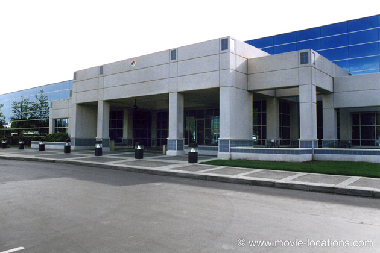
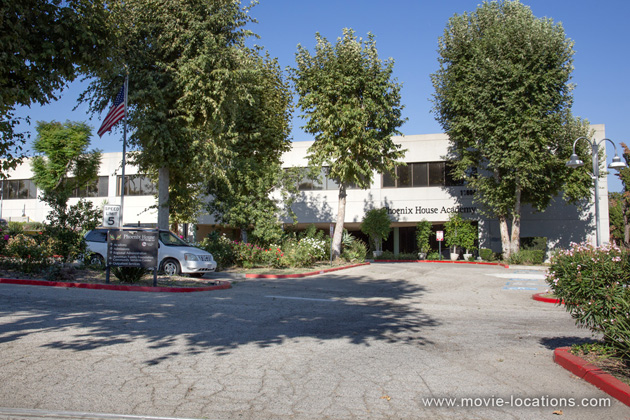
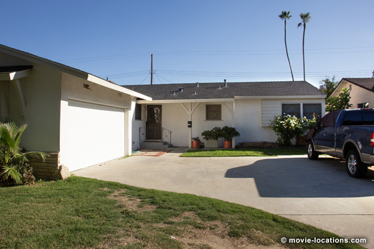
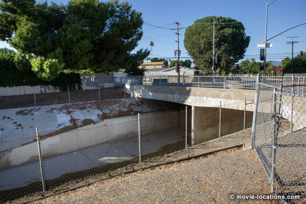
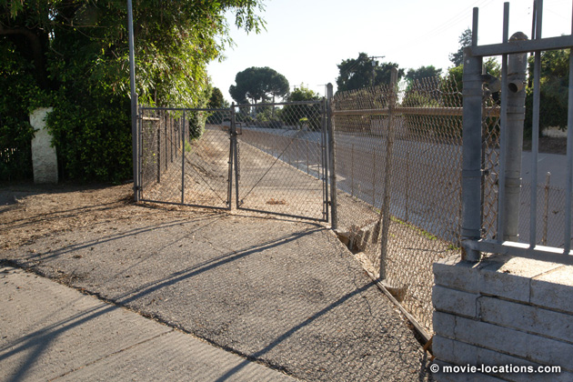
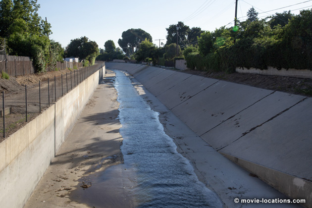

Terminator 2: Judgment Day
Main Content

Some years on from The Terminator, and future resistance hero John Connor (Edward Furlong) is an eleven-year-old, farmed out to foster parents in the northern Los Angeles suburb of Reseda (don’t go looking for ‘South Almond Avenue’ – it’s fictitious), while Mom Sarah (Linda Hamilton) is banged up in a maximum security asylum.
At $94 million, T2 was the most expensive movie ever (the original Terminator, came in at a neat $6 million). But that was before Titanic. James Cameron took the opportunity to revisit ideas from the first Terminator movie on a grander scale.
The opening ‘future war’ is reprised, using the ruins of a demolished steel plant at Fontana, on the outskirts of San Bernardino, Route 10 east of Los Angeles. With a sense of thrift that would gladden his old mentor (Cameron is a graduate of the Roger Corman school of moviemaking – at age 23 he handled the special effects on the Corman-produced Battle Beyond The Stars), the twisted bikes, burned-out cars and blackened cinders used as dressing are charred debris from the Universal Studios Hollywood fire of 1989, when a disgruntled security guard torched the famous backlot.
Fontana also proved useful in providing a destroyed LA for Independence Day.

The ‘Pescadero State Hospital for the Criminally Insane’, where Sarah Connor is incarcerated, has nothing to do with Pescadero, which is a small California fishing town between San Francisco and Santa Cruz. The institution of the movie is closer to Los Angeles. It was the Phoenix Academy, previously the Lake View Medical Center, 11600 Eldridge Avenue at Kagel Canyon, off Foothill Boulevard to the north of Hansen Dam Park in the San Fernando Valley. Built as a medical facility in the early Seventies, it was closed, either due to earthquake damage or lack of funding, according to which story you buy, and started a new career as a movie location (it was seen in the confusingly non-Michael Myers Halloween III: Season Of The Witch back in 1982). It's now the Phoenix House Academy.
The new user-friendly T-800 Terminator, by another stroke of luck, finds himself naked in the San Fernando Valley at biker hangout, The Corral Bar, which stood at 12002 Osborne Street, Lakeview Terrace, where he gets himself not only a leather jacket, but a cool bike, shades, and a large gun as well. Don't plan a night out at the bar. It's long gone, and a library now stands on the site. Arriving a few years later, the T-800 would have spent the entire movie dressed like a librarian.
Meanwhile, the T-1000 upgrade liquid metal Terminator (Robert Patrick) fetches up beneath the Sixth Street Bridge (featured in the climax of S.W.A.T. but now sadly demolished), downtown Los Angeles, and has soon tracked young Connor down to the model of anonymous suburbia, the San Fernando Valley.
Connor's family home, where the T-1000 sees off John's step-family, is 19828 Valerio Street, Winnetka – between Reseda and Canoga Park.

The shopping mall chase and confrontation between the two Terminators wasn’t filmed in Winnetka, though. The exterior is nearby, the Northridge Fashion Center, 9301 Tampa Avenue, Northridge, which was seriously damaged in the 1994 'quake and has since been majorly renovated.
The interior, though, is on the coast at Santa Monica, in the 162-store Santa Monica Place, Broadway at Third Street (which had previously been ‘Ridgemont Mall’ in Fast Times at Ridgemont High).

Escaping on his dirt bike, Connor tears into one of Los Angeles’ concrete flood control channels, back in the San Fernando Valley. The spillway used is Bull Creek, which leads down to the Sepulveda Flood Control Area (in drier times, the Balboa and the Encino Golf Courses).

The T-1000 gives chase in a Freightliner tow-truck, spectacularly crashing from the overpass on Plummer Street at Hayvenhurst Avenue on the eastern edge of Northridge, down into Bull Creek, tearing through the 40-foot wide spillway. Immediately south on Hayvenhurst is the gated entrance to the channel through which the T-800 follows on his bike.

Having sprung Mom from Pescadero, Connor and the good Terminator head out to a desert compound on the western rim of the Mojave Desert, at Lancaster in Antelope Valley. Mom Connor, spurred on by visions of Los Angeles engulfed in a nuclear firestorm, takes off to kill scientist Dr Dyson (Joe Morton), whose research is destined to lead to the Skynet System and hence the future war.
Dyson’s house, where the Terminator stomach-churningly demonstrates his non-human status, is a private home on Pacific Coast Highway, just west of South Malibu Canyon Road, west of Malibu (though it’s not visible from the road).
The ‘Cyberdyne HQ’, high security home of the lethal cyborg chip, really is situated in California’s Silicon Valley, the heart of the computer industry. The building is now the home of Mattson Technology, 47131 Bayside Parkway, at Gateway Boulevard, Fremont, a suburb of San Jose. A glass façade added a third storey to the building, and the (real glass) windows were wired to blow out simultaneously with a gasoline fireball.
The commandeered SWAT truck crashes through a specially added lobby. Fremont is east of San Francisco Bay over the Dumbarton Bridge where Route 17 intersects with Route 84.
The T-1000 oozes into the helicopter for the climactic chase sequence. Los Angeles’ constantly packed freeways are vital arteries constantly teetering on the verge of terminal gridlock. Closing a section down is risking fatal thrombosis, but Los Angeles is also movie city, and there’s always a way.
A four-lane section of freeway was discovered down toward San Pedro. In this scruffy industrial hinterland of the port is a three-mile north-south stretch of roadway linking Sepulveda Boulevard with the naval base on Terminal Island. The Terminal Island Freeway could be closed for the night without major disruption to the city’s traffic flow.
For most of the chase, the helicopter was suspended from a crane mounted on a flatbed truck which drove along the adjacent lane, but for one hair-raising stunt, a real helicopter flew under the twenty-foot overpass of the Pacific Coast Highway.
The end of the chase brings the movie full circle. The steelworks, supposedly at the end of the freeway, is adjacent to the ruins at Fontana used for the opening sequence. Here a steelmill, abandoned for seventeen years, was brought to life with a battery of trick effects. Molten metal gives insurance companies panic attacks so the film uses rivers of white paint and illuminated plastic panels amid showers of sparks.
Visit Info
Visit The Film Locations
California
Visit: California
California | Los Angeles
Visit: Los Angeles
Flights: Los Angeles International Airport (LAX), 1 World Way, Los Angeles, CA 90045 (tel: 424.646.5252)
Travelling around: Los Angeles Metro
Visit: Universal Studios Hollywood, 100 Universal City Plaza, Universal City, CA 91608 (tel: 800.864.8377)
Visit: Santa Monica Place, Broadway at Third Street, Santa Monica, CA 90401 (tel: 310.260.8333)